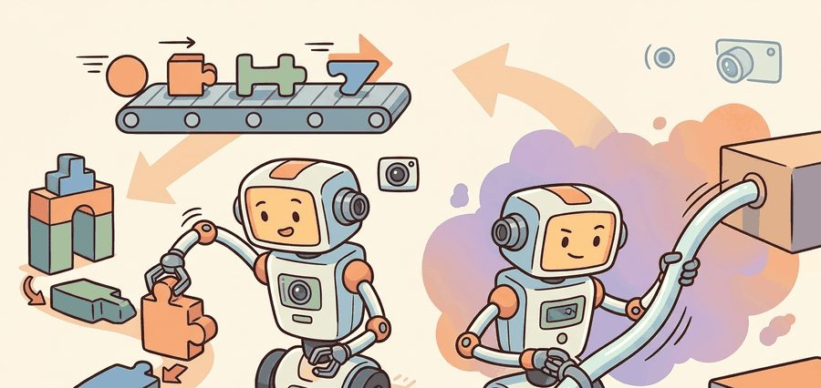

"Action representation is where a language model becomes a robot controller or fails to become one."
A Grounded AI Agent

This section builds on action chunking introduced in section 22.2 and the diffusion and flow heads covered in sections 22.4 and 22.5; those representations are the continuous-head alternatives compared against FAST tokens throughout. The frequency-space compression idea introduced here recurs in Part 9 alongside contact-rich manipulation planning in section 42.3, where the limits of smooth-trajectory assumptions become concrete.
A large robot-data mixture can improve average performance while weakening a specific robot or task family. Report per-embodiment and per-task slices, not only aggregate success.
Cross-embodiment learning works only when the dataset records what changed: robot body, camera view, action convention, control rate, task language, and success definition.
A robot arm reaching for a cup at 50 Hz produces 600 numbers per second: position, velocity, and gripper state across all joints. Feed those raw numbers token-by-token into a language model and the sequence explodes, inference lags behind the real world, and quantization error turns smooth motion into jerky steps. This is the wall every VLA hits the moment it tries to act faster than a sentence. FAST breaks through it by compressing action sequences in frequency space before tokenization, slashing token count without losing the fine timing that makes a grasp succeed. You will build that intuition here, compare it directly against continuous heads, and leave with a clear decision rule for choosing your action representation on a new robot.
Two engineers train the same Vision-Language-Action model (VLA) on the same demonstrations, yet one robot grasps cleanly and the other stutters into the cup. The only difference: how each team turned continuous motion into symbols the model could predict. A VLA can only learn actions through the representation it is given, and if that representation loses timing, smoothness, gripper convention, or coordinate meaning, no amount of language understanding repairs it. This is why action tokenization, action chunking, diffusion heads, and flow heads belong in the same design conversation.
A tokenizer that loses a robot's timing is not a compression step; it is a mistranslation between intention and motion.
Figure 34.5A previews the core tradeoff this section unpacks: discrete FAST tokens reconstruct high-frequency motion with lower inference latency, while a continuous regression head produces smoother curves but cannot represent multiple valid action modes.
Naive tokenization bins each action dimension at each timestep. It is easy to implement, but it can produce long token sequences and visible quantization error. Action chunking predicts several future actions at once, which improves temporal consistency. Diffusion and flow heads generate continuous chunks directly. FAST keeps the token route but compresses action sequences in frequency space before tokenization.
Code Fragment 1 below shows a tiny version of per-dimension action tokenization. The example is intentionally small so the quantization error is visible.
# Discretize continuous end-effector deltas into fixed bins.
# This teaches the source of tokenization error before FAST compresses full action sequences.
import numpy as np
values = np.array([-0.041, -0.012, 0.006, 0.019, 0.044])
bins = np.linspace(-0.05, 0.05, 9)
token_ids = np.digitize(values, bins) - 1
centers = (bins[:-1] + bins[1:]) / 2
reconstructed = centers[np.clip(token_ids, 0, len(centers) - 1)]
print(token_ids.tolist())
print(np.round(reconstructed - values, 4).tolist())[0, 3, 4, 5, 7] [-0.0028, 0.0058, 0.0002, -0.0002, -0.0002]
token_ids each value maps to and the resulting reconstruction error after decoding the bin centers back to continuous values.If binning each timestep independently is what inflates sequence length and injects that visible quantization error, the natural fix is to compress the sequence before tokenizing it at all, which is exactly what FAST does.
FAST stands for Frequency-space Action Sequence Tokenization. Instead of tokenizing every raw action dimension at every timestep, it transforms an action sequence into frequency coefficients, then tokenizes the compressed representation. This is the token count cliff: a 50-step, 7-DOF (degree-of-freedom, meaning one independently controllable joint or axis) action chunk produces 350 raw tokens per chunk with naive binning, but only 16 to 32 FAST tokens after DCT (Discrete Cosine Transform) compression on smooth reaching motions. The intuition is familiar from signal processing: many smooth robot motions can be described with fewer low-frequency components than raw samples.
Why token count matters on a real robot. A robot servo loop does not wait for the policy. At 50 Hz the controller expects a new action command every 20 ms; if autoregressive decoding of 350 tokens takes 40 ms on the onboard GPU, the controller either stalls or replays a stale command, producing visible jitter or missed contact timing. Cutting the sequence to 20 tokens brings inference inside the 20 ms budget, making real-time closed-loop control possible without faster hardware.
How DCT compression achieves the reduction. A smooth reaching trajectory changes slowly across timesteps, so most signal energy concentrates in the first few cosine basis functions (low frequencies). The Discrete Cosine Transform reorganizes the action sequence into those basis coefficients ordered by frequency; truncating after the first $K_{\text{freq}}$ coefficients discards only the near-zero high-frequency terms. The surviving coefficients are then quantized and packed into a short token sequence via Byte Pair Encoding (BPE).
Think of a musician humming a slow melody. A sound engineer can describe that melody completely with just a few low notes on a piano: the tune changes slowly, so almost all the information lives in the low keys. If the engineer wrote down every air-pressure sample 50,000 times per second instead, the transcription would fill a book, yet convey the same song. The DCT does the same thing to a robot's joint trajectory: it finds the handful of "low notes" that together reconstruct the full motion, discards the near-silent high notes, and hands a short list of coefficients to the tokenizer instead of hundreds of raw timestep values.
A common assumption is that FAST is naive tokenization with finer bins or a larger vocabulary. That assumption is wrong. FAST transforms the entire action sequence into frequency coefficients via the DCT before any binning occurs. The tokenizer then operates on compressed spectral structure, not on raw per-timestep values. Think of it as a two-stage pipeline. First, the DCT reorganizes a 50-step, 7-DOF chunk into a compact coefficient vector. Second, BPE tokenizes that vector. Applying finer bins to raw timestep values would increase token count, not reduce it. It would also miss the cross-timestep correlations that FAST exploits to cut sequence length.
Robot actions often change smoothly over short horizons. Frequency-space compression captures that smooth structure before the sequence reaches the language-model-style tokenizer. The model predicts fewer symbols, and those symbols decode back into a continuous action chunk.
The manual binning above is 13 lines and omits control-rate metadata, compression, inverse transforms, and dataset normalization. A FAST+ tokenizer in an open VLA stack handles those details as a reusable component, letting the policy train on compressed action tokens while preserving a continuous decoded trajectory.
# Pseudocode for a FAST-style tokenizer interface.
# Use the current openpi or FAST implementation rather than reimplementing DCT+BPE.
tokenizer = load_action_tokenizer("fast_plus")
tokens = tokenizer.encode(action_chunk, robot_metadata=metadata)
restored_chunk = tokenizer.decode(tokens, robot_metadata=metadata)
if isinstance(restored_chunk, list):
print({"rows": len(restored_chunk), "first": restored_chunk[0] if restored_chunk else None})
elif isinstance(restored_chunk, dict):
print({"fields": sorted(restored_chunk), "audit_ready": all(value not in (None, "") for value in restored_chunk.values())})
else:
print({"value": restored_chunk})tokenizer.encode and tokenizer.decode calls invoked on action_chunk with robot_metadata, showing the production FAST+ interface that replaces the manual per-timestep binning of Code Fragment 1.Input: raw action chunk $\mathbf{a} = (a_1, \ldots, a_T) \in \mathbb{R}^{T \times D}$, robot metadata $m$ (control rate, normalization statistics $\mu, \sigma$), FAST vocabulary $\mathcal{V}$ fit by BPE on DCT coefficients
Output: decoded action chunk $\hat{\mathbf{a}} \in \mathbb{R}^{T \times D}$ reconstructed from tokens $\tau = (\tau_1, \ldots, \tau_K)$ with $K \ll T \cdot D$
So far: the raw action chunk has been normalized to zero mean and unit variance, transformed into DCT frequency coefficients, and truncated to keep only the lowest $K_{\text{freq}}$ components; the remaining steps turn those coefficients into tokens the VLA can predict, and then decode them back into a motion.
Trace the DCT pipeline with actual numbers. Take a single joint over 4 timesteps: $\tilde{a} = [0.10, 0.30, 0.50, 0.70]$ (already normalized, a smooth ramp). Step 1, compute the Type-II DCT coefficients $c_k = \sum_{t=0}^{3} \tilde{a}_t \cos(\tfrac{\pi}{4}(t+\tfrac{1}{2})k)$. Evaluating: $c_0 = 0.10+0.30+0.50+0.70 = 1.600$; $c_1 = 0.10(0.924)+0.30(0.383)+0.50(-0.383)+0.70(-0.924) = -0.526$; $c_2 \approx 0.000$; $c_3 \approx -0.011$. Step 2, truncate to $K_{\text{freq}}=2$: keep $[1.600, -0.526]$, discard the two near-zero high-frequency terms. The 4-value sequence is now 2 coefficients, a 2x cut, and on a real 50-step chunk the same concentration takes 50 values down to roughly 16. Step 3, inverse DCT from just $[1.600, -0.526, 0, 0]$ reconstructs $[0.105, 0.297, 0.503, 0.695]$, a worst-case error of 0.005, far below typical per-joint tolerance. The lesson in numbers: almost all the signal lived in $c_0$ and $c_1$, so throwing away $c_2$ and $c_3$ cost almost nothing.
Physical Intelligence's pi-zero family ships the FAST+ tokenizer as the default action representation for autoregressive pretraining across a heterogeneous robot fleet (single arms, bimanual setups, and mobile manipulators). FAST+ lets one shared vocabulary compress 50 Hz action chunks from many embodiments into short token sequences, which is what makes a single autoregressive backbone trainable on a mixed-robot dataset. The same tokenizer is distributed in the open openpi repository so practitioners can encode their own demonstrations without reimplementing the DCT-plus-BPE pipeline.
The intuition, the compression pipeline, and the algorithm above cover how FAST tokenizes actions; the remaining piece the section title promises is a decision rule for choosing between FAST tokens and continuous heads on a new robot, which the next paragraph and the Decision Guide table deliver directly.
The choice between FAST tokens and continuous heads (diffusion or flow) turns on three concrete factors. First, inference latency. An autoregressive token model decodes a 50-step action chunk in a single forward pass once it predicts the tokens. A diffusion head instead runs 10 to 100 denoising steps per chunk, which adds 50 to 200 ms on a typical GPU (as of 2024; faster samplers and dedicated hardware continue to narrow this gap). At 50 Hz each servo tick is 20 ms, so a 200 ms diffusion head makes the robot execute a command computed 10 timesteps ago. At a typical reaching speed of around 0.1 m/s, the arm has by then already moved roughly 2 cm from where the policy placed it when it chose that action; slower or faster motions shift this figure accordingly. Second, multimodality: if two qualitatively different grasp strategies are equally valid for the same observation, a diffusion or flow head can represent both modes; a single token sequence collapses to one mode. Third, training data smoothness: FAST compression is most efficient when actions are smooth over the prediction horizon, because the DCT concentrates energy in low-frequency coefficients. Jerky or contact-rich motions (peg insertion, door unlatching) spread energy across many coefficients and recover fewer tokens than smooth reaching motions, partially eroding FAST's sequence-length advantage. A practical rule: if your task is smooth and your inference budget is tight, FAST tokens; if your task is multi-modal or contact-rich and you can afford the sampling cost, a diffusion or flow head.
When loading a pretrained FAST tokenizer from the openpi repository, check that the tokenizer's action_mean and action_std statistics match your robot's action distribution before training. The FAST vocabulary is fit via BPE on DCT coefficients computed from a specific dataset; applying a mismatched tokenizer silently shifts every decoded action by the normalization offset, producing reconstruction errors that look small in offline RMSE but cause consistent positional drift on hardware. Run tokenizer.verify_stats(your_demo_dataset) (or the equivalent dataset-statistics check in your stack) and refit the vocabulary if the KL divergence between stored and observed statistics exceeds roughly 0.05 nats.
Figure 34.5 should be read as an action-interface comparison: discrete tokens, continuous heads, chunked actions, rate limits, and inverse transforms must be audited together.
Curriculum, depth, and self-containment. FAST shows that tokenized actions can remain competitive when the tokenizer compresses smooth trajectories before symbols are predicted. For Action tokenization vs. continuous heads; the FAST tokenizer, the practical reading is to pin down the interface, assumptions, concrete example, and failure mode before comparing methods.
Production and evaluation contract. Tokenization quality is a control problem, not a vocabulary trick. Treat the diagram, code, table, exercise, warning, and references here as one evidence packet, each element covering a distinct claim: boundary, artifact, tool choice, transfer check, failure mode, and source grounding.
Before accepting a Action tokenization vs. continuous heads; the FAST tokenizer result, name the loop variable that changed, the tool that makes it reproducible, the failure that would fool the metric, and the source that backs the claim.
Write an evidence row for one action representation: token or vector format, quantization scale, controller frequency, saturation rule, success metric, and the failure caused by representation mismatch.
With the interface, its failure modes, and the latency stakes now pinned down, those scattered tradeoffs collapse into a single lookup table that maps each representation to the situation it fits.
| Representation | Use When | Main Risk |
|---|---|---|
| Single-step actions | Fast reactive control with strong low-level controller | Jitter and myopic behavior |
| Action chunks | Manipulation needs short-horizon consistency | Chunk reuse can hide mid-course errors |
| Naive tokens | Simple experiments or low-frequency actions | Quantization error and long sequences |
| FAST tokens | Autoregressive VLA with smooth high-rate actions | Tokenizer mismatch across robots |
| Diffusion or flow | Continuous multi-modal trajectories | Sampling cost and latency |
Quantization failure is silent until it reaches the hardware. Consider a wrist-rotation joint that moves 0.018 radians per timestep at 50 Hz. With 8 bins over a range of plus or minus 0.05 radians, the bin width is 0.0125 radians: every small corrective motion is either rounded up or zeroed out, and the controller sees a staircase instead of a smooth curve. On a manipulation task requiring sub-centimeter gripper placement, that staircase produces visible oscillation and failed grasps even though the average reconstruction error looks small in offline evaluation. The same bin count is harmless for a base-navigation velocity command at 5 Hz, where 0.012-radian/step error is below the wheel slip floor. Always evaluate quantization error at the actual control frequency and joint, not averaged across the full action space.
Choose the action representation by plotting three things from your demonstrations: action smoothness, control frequency, and number of plausible trajectories for the same observation. Smooth high-rate data points toward FAST, diffusion, or flow. Sparse low-frequency commands can tolerate simpler tokens.
Expected output: Action tokenization vs. continuous heads; the FAST tokenizer should leave a reproducible VLA evidence trace with checkpoint, action representation, robot interface, metric, and failure label.
The best check on an action tokenizer is to decode it back into motion and ask whether the robot still moves the way the demonstration intended.
What information is lost when you bin each action dimension independently? Name one motor task where that loss would matter.
1. Adaptive frequency tokenization for contact-rich manipulation. FAST's fixed truncation threshold K_freq is tuned for smooth reaching and degrades on contact-rich tasks where impact events inject sharp high-frequency energy. The GROOT (Generalist Robot 00 Transformer) line from NVIDIA Research (2024), trained for bimanual manipulation on the Fourier GR-1 humanoid, motivated per-segment and per-dimension adaptive K_freq schedules that raise the frequency budget only around detected contact events such as a gripper closing on a rigid object. That GROOT line and follow-up ablations in the Open-FAST community tokenizer benchmark represent the clearest current attempts to bridge smooth and contact-rich regimes in a single tokenization scheme.
2. Modality-routing action heads. Rather than committing to tokens or a continuous head at architecture time, recent work routes each action chunk through a learned gate: smooth, low-force segments go through a FAST tokenizer path while contact or multi-modal segments switch to a diffusion or flow head. Physical Intelligence's pi-zero point five (2025) demonstrates a version of this in production, and CrossFormer (2024, Berkeley) shows that a single transformer backbone can host multiple action decoders simultaneously, enabling head-swapping without retraining the trunk.
3. Action tokenizer transfer across embodiments without vocabulary refit. FAST vocabularies are BPE-fit on a specific dataset's DCT coefficients, which means deploying the same tokenizer on a new robot body (different DOF count, control rate, or joint range) requires vocabulary refit or a normalization bridge. Universal Robot Tokens (URToken, 2025, CMU) and the embodiment-agnostic tokenizer in RoboVLMs (2024) propose shared spectral bases that transfer across embodiment families without full refit, using per-robot adapter layers that rescale coefficient statistics without rebuilding the BPE merge table.
Open problem for PhD students. All three directions above assume that the action sequence horizon (chunk length T) is fixed at training time. In practice, contact timing and task duration vary: a grasp may resolve in 12 timesteps or 80 depending on object pose uncertainty. Developing a variable-length FAST tokenizer that dynamically selects T and K_freq per chunk, conditioned on the visual observation, while keeping the autoregressive token count below a latency budget, is an open problem with no clean solution in the 2024-2026 literature. A compressibility-conditioned early-exit strategy during DCT truncation is one candidate, but it has not been validated against a diffusion baseline on real hardware at 50 Hz.
Action representation is the hidden curriculum of VLA training. It determines what motor behaviors the model can express before learning even begins.
Beginner (weekend): Visualize FAST compression error in Gymnasium. Record 50-step joint trajectories from a Gymnasium Reacher-v4 environment, apply DCT compression at varying K_freq values (4, 8, 16), and plot reconstruction error against token count to see the smoothness-compression tradeoff firsthand. The key challenge is building intuition for why error spikes at low K_freq for fast corrective movements but stays flat for slow reaching arcs.
Intermediate (1 to 2 weeks): Swap action heads on a LeRobot ACT policy. Using LeRobot's ACT implementation on the lerobot/pusht dataset, replace the default continuous action head with a FAST-style DCT tokenizer head, then benchmark offline reconstruction RMSE and simulated rollout success side-by-side. The key challenge is matching the BPE vocabulary to the dataset's action statistics so the tokenizer's normalization offsets do not silently corrupt decoded trajectories.
Intermediate (1 to 2 weeks): Contact-rich tokenization stress test in MuJoCo. In a MuJoCo peg-insertion task, compare FAST tokens against a diffusion head by logging DCT coefficient energy distribution across frequency bins during successful versus failed insertions, then use that analysis to set K_freq adaptively per motion segment. The key challenge is that contact events inject high-frequency energy, so a fixed K_freq chosen for smooth reaching will truncate exactly the coefficients that encode contact timing.
Take a short sequence of end-effector deltas from any robot task. Compute the quantization error from 8, 16, and 256 bins, then explain which errors would be visible on hardware.
Goal. Build empirical intuition for why FAST compresses smooth motion cheaply but pays for contact-rich motion, by measuring reconstruction error as a function of kept frequency coefficients.
Tools needed. Python with numpy, scipy (use scipy.fft.dct and idct with type=2, norm='ortho'), and matplotlib. No robot or GPU required; runs on a laptop in under 30 minutes.
Procedure. Generate two 50-step, 7-DOF action chunks: (1) a smooth one, each joint a low-frequency sinusoid plus small noise; (2) a contact-rich one, the same sinusoid with a sharp step or spike injected at one timestep to mimic a gripper impact. For each chunk, z-score normalize per dimension, take the DCT, truncate to $K_{\text{freq}} \in \{2, 4, 8, 16, 32, 50\}$, inverse-transform, denormalize, and record per-step RMSE.
What to vary. $K_{\text{freq}}$ (the kept-coefficient count) and the chunk type (smooth vs contact-rich); optionally the spike magnitude.
What to observe. Plot RMSE against $K_{\text{freq}}$ for both chunks on one axis. You should see the smooth curve hit near-zero error by $K_{\text{freq}} \approx 8$, while the contact-rich curve stays high until $K_{\text{freq}}$ approaches the timestep where the spike lives. That gap is exactly the sequence-length advantage FAST loses on contact-rich tasks, and it tells you where to set $K_{\text{freq}}$ for your own data.
Section 34.6 studies co-training, the method that tries to combine web semantics with embodied data.
FAST uses frequency-space compression to tokenize continuous action sequences for autoregressive VLAs. It is the key source for the chapter distinction between naive per-dimension binning and compressed action-sequence tokenization.
Pi-zero point five extends pi-zero through heterogeneous co-training for broader open-world generalization. It is useful for readers studying the frontier between task-specific robot policies and household-scale generalist behavior.
pi-zero uses a flow-matching action head on top of a pretrained vision-language backbone. The paper is central for understanding why continuous action generation became a serious alternative to discretized action tokens.
RT-2 made the action-as-language move explicit by fine-tuning VLM backbones to emit robot actions as tokens. Researchers should read it for the co-training setup, while practitioners should read it for the limits of transferring web semantics into motor control.
Chi et al. (2023). "Diffusion Policy: Visuomotor Policy Learning via Action Diffusion." arXiv.
Diffusion Policy established denoising over action sequences as a strong imitation-learning recipe. It gives the mathematical and practical background for diffusion heads in later VLA systems.
Hugging Face. "LeRobot." GitHub.
LeRobot is the practical open-source toolkit used here for datasets, policy training, evaluation, and low-cost robot workflows. Engineers should start here before writing custom data loaders or training loops.